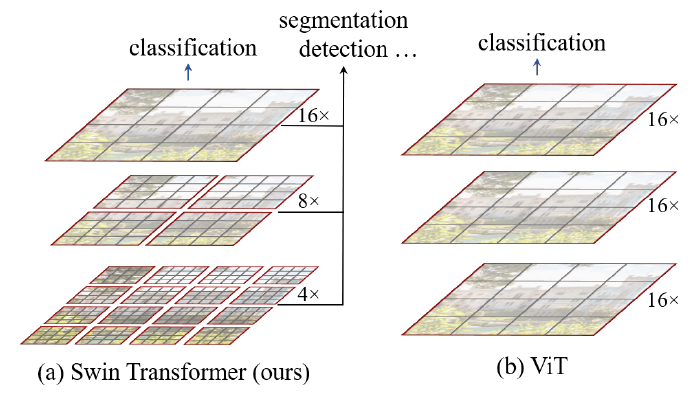
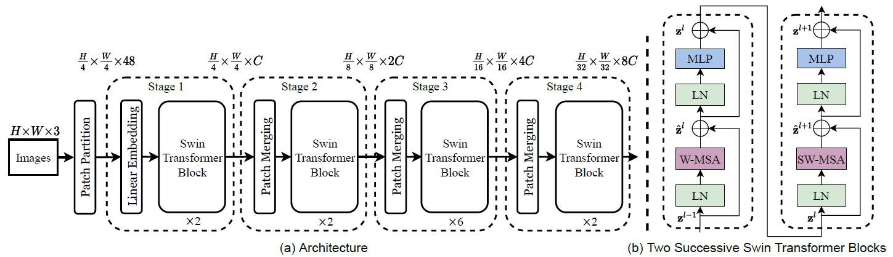

Swin Transformer

目前将 Transformer 从自然语言处理领域应用到计算机视觉领域主要有两大挑战：
- 视觉实体的方差较大，例如同一个物体，拍摄角度不同，转化为二进制后的图片就会具有很大的差异。同时在不同场景下视觉 Transformer 性能未必很好。
- 图像分辨率高，像素点多，如果采用ViT模型，自注意力的计算量会与像素的平方成正比。
针对上述两个问题，论文中提出了一种基于滑动窗口机制，具有层级设计（下采样层） 的 Swin Transformer：
- 滑窗操作包括不重叠的 local window，和重叠的 cross-window。将self-attention限制在一个窗口（window size固定）中，一方面能引入 CNN 卷积操作的局部性，另一方面能大幅度节省计算量，它只和窗口数量成线性关系。
- 通过下采样的层级设计，能够逐渐增大感受野，从而使得注意力机制也能够注意到全局的特征。
模型结构

整个模型采取层次化的设计，一共包含 4 个 stage，除第一个 stage 外，每个 stage 都会先通过 Patch Merging 层缩小输入特征图的分辨率，进行下采样操作，像 CNN 一样逐层扩大感受野，以便获取到全局的信息。
ViT
An image is worth 16x16 words: Transformers for image recognition at scale
Key: scalable，模型越大效果越好, Transformer和CNN相比缺少归纳偏置（inductive bias）
CNN具有以下特征：
- 局部性（locality/two-dimensional neighborhood structure），即图片上相邻的区域具有相似的特征
- 平移不变形（translation equivariance）
结构：ViT将输入图片分为多个patch（16x16），再将每个patch投影为固定长度的向量送入Transformer，后续encoder的操作和原始Transformer中完全相同。但是因为对图片分类，因此在输入序列中加入一个特殊的token，该token对应的输出即为最后的类别预测。